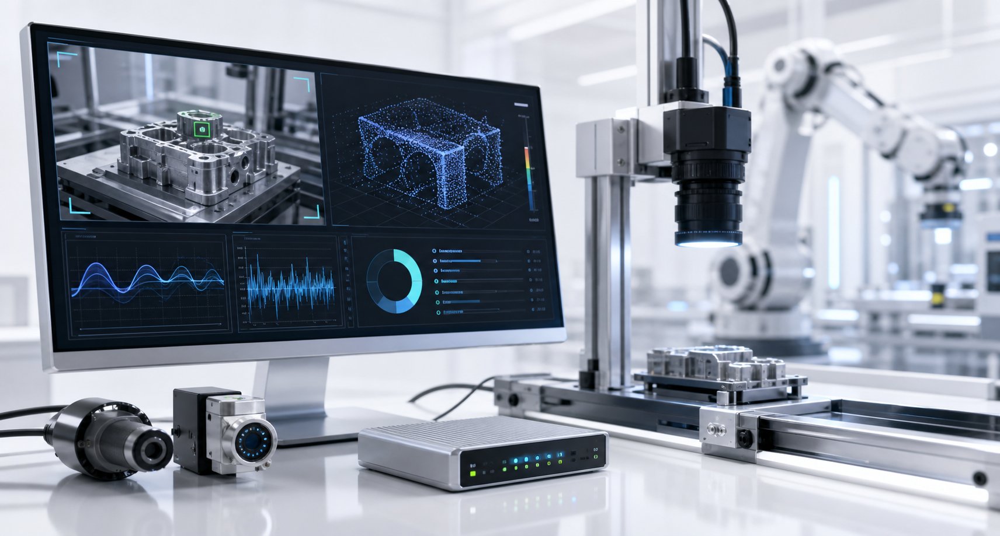
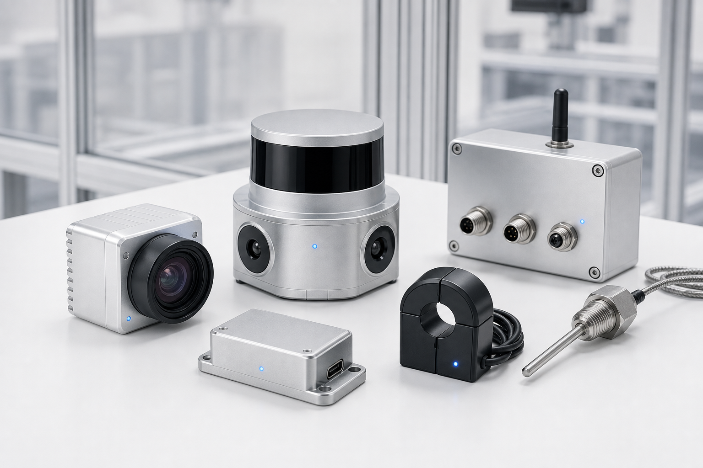
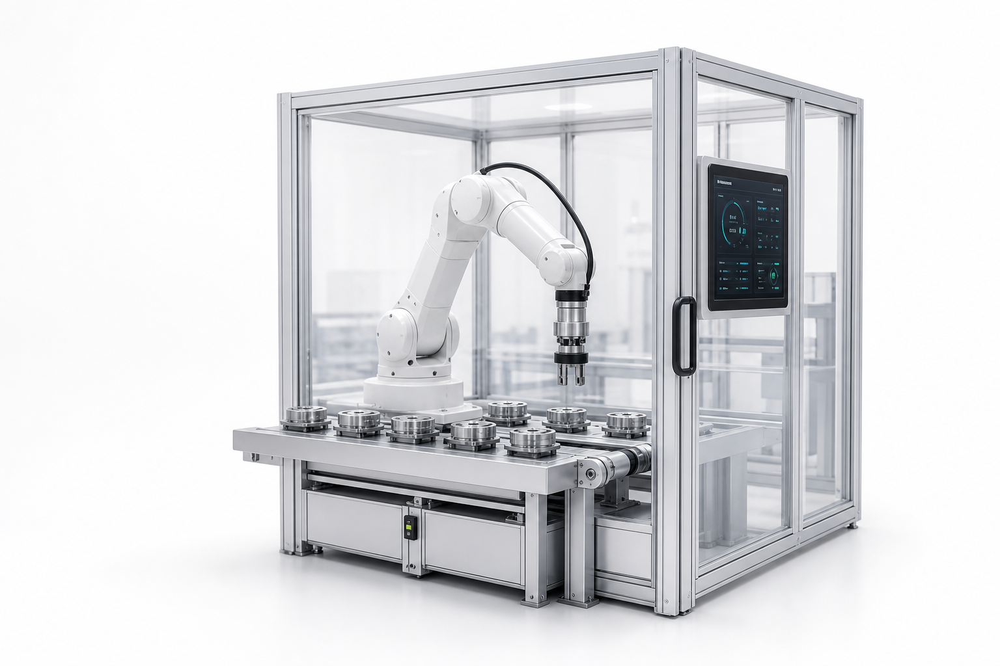

핵심 솔루션
현장 문제를 자동화 시스템으로 전환합니다.
설비 예지 진단
진동, 온도, 전류 데이터를 분석해 설비 이상 징후와 점검 우선순위를 도출합니다.
비전 AI 검사
카메라 데이터를 기반으로 불량, 객체, 작업 상태를 인식해 검사 흐름을 자동화합니다.
로봇 운영 자동화
로봇 위치, 작업 상태, 센서 신호를 연결해 현장 운영에 맞는 자동화 동선을 설계합니다.
제품
Physical AI 자동화를 구성하는 핵심 솔루션
AI 비전, 센서 데이터, 로봇 제어를 하나의 자동화 구축 흐름으로 제공합니다.

NeuraVision AI
카메라 영상에서 부품, 색상, 불량 여부를 인식해 검사와 분류 작업을 자동화합니다.

SensorOps Engine
LiDAR, IMU, 거리센서와 설비 데이터를 연결해 현장 상태와 작업 가능 조건을 판단합니다.

RoboMotion Control
AI 판단 결과를 로봇팔, 모터, 제어보드와 연결해 실제 현장 작업으로 실행합니다.
대표 사례
반복 작업을 자동화 시스템으로 바꾼 사례
처음에는 핵심 사례만 짧게 확인하고, 필요한 사례를 열어 문제·기술·결과를 자세히 볼 수 있습니다.
문제 작업자가 색상과 형태를 직접 확인해 분류 속도와 정확도가 일정하지 않았습니다.
적용 기술 NeuraVision AI, 카메라 인식, 색상 분류 로직
자동화 결과 물체를 자동 인식하고 분류 기준에 따라 로봇 작업으로 연결합니다.
문제 이동 로봇이 작업 구역 변화와 장애물 때문에 안정적인 이동 경로를 유지하기 어려웠습니다.
적용 기술 SensorOps Engine, LiDAR, 거리 데이터 분석
자동화 결과 장애물 위치를 판단하고 안전한 이동 조건을 운영 화면에 표시합니다.
문제 로봇 배터리, 작업 상태, 위치 정보가 분산되어 운영자가 즉시 확인하기 어려웠습니다.
적용 기술 NeuraMotion OS, 로봇 상태 데이터, 운영 대시보드
자동화 결과 로봇별 상태와 작업 흐름을 한 화면에서 확인하고 운영 판단을 빠르게 내립니다.
실시간 운영 예시 보기도입 플랜
고객 상황에 맞춰 필요한 단계부터 제안합니다.
자동화 검증, 실제 구축, 운영 개선 중 현재 현장에 필요한 상담 유형을 선택해 문의할 수 있습니다.
추천 상황: 자동화가 가능한지 먼저 확인하고 싶은 현장
카메라, 센서, 설비 로그 등 현재 확보 가능한 데이터로 자동화 가능성을 빠르게 검증합니다.
- 현장 문제 및 데이터 구조 진단
- 카메라/센서 기반 테스트
- AI 인식 또는 센서 분석 데모
- 자동화 적용 가능성 보고
추천 상황: 자동화 시스템을 실제 장비와 연동해 구축하려는 현장
AI 판단 로직, 센서/카메라 연동, 로봇 제어 흐름을 하나의 자동화 시스템으로 구축합니다.
- AI 모델 및 판단 로직 설계
- 센서/카메라/제어보드 연동
- 로봇 동작 및 작업 흐름 구현
- 운영 대시보드 구성
- 현장 테스트 및 개선
추천 상황: 운영 중인 자동화 시스템을 안정화하거나 개선하려는 현장
운영 로그와 현장 피드백을 바탕으로 모델 성능, 장비 상태, 대시보드 기능을 개선합니다.
- 운영 로그 분석
- AI 모델 성능 개선
- 센서 및 장비 상태 점검
- 대시보드 기능 개선
- 추가 자동화 기능 확장
프로젝트 비용은 현장 환경, 장비 구성, 데이터 상태, 구축 범위에 따라 달라지며
상담 후 맞춤 견적으로 제안됩니다.
구축 절차
진단부터 운영 개선까지 한 흐름으로 진행합니다.
전체 흐름은 한 줄로 확인하고, 각 단계를 클릭하면 세부 진행 내용을 확인할 수 있습니다.
01
상담
자동화가 필요한 공정, 설비, 로봇 운영 문제를 정리하고 적용 목표를 설정합니다.
02
데이터 진단
카메라, 센서, 설비 로그의 수집 가능성과 데이터 품질을 확인합니다.
03
설계
AI 비전, 센서 판단, 로봇 제어가 연결되는 자동화 구조와 판단 기준을 설계합니다.
04
구축
운영 화면, 알림, 로봇 동작 흐름으로 AI 판단 결과를 실제 작업에 연결합니다.
05
운영 개선
현장 피드백과 운영 데이터를 바탕으로 자동화 기준과 모델 성능을 개선합니다.